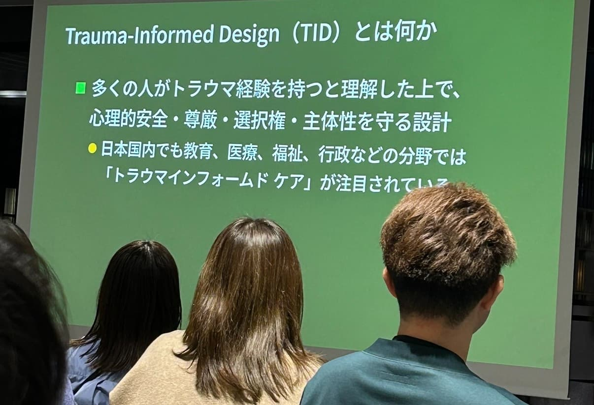
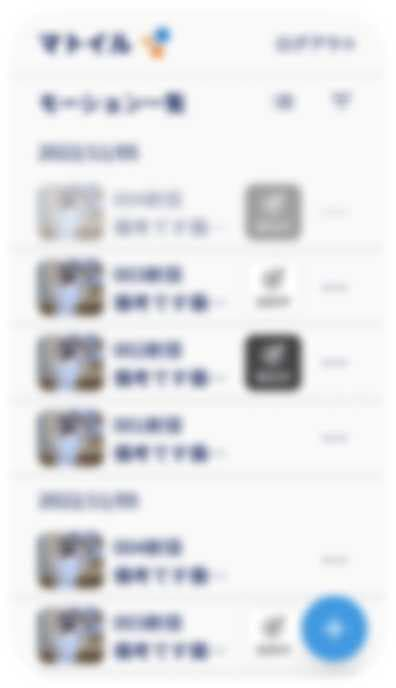
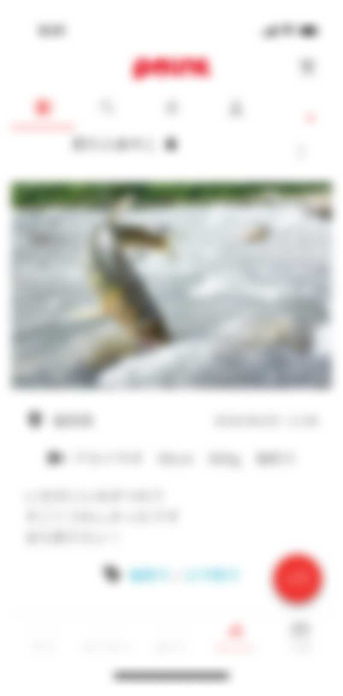
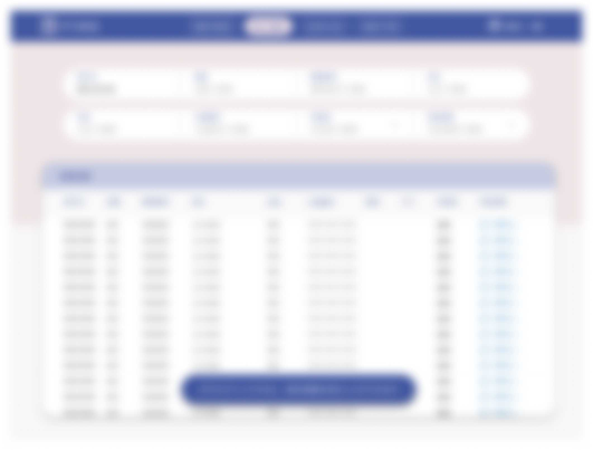
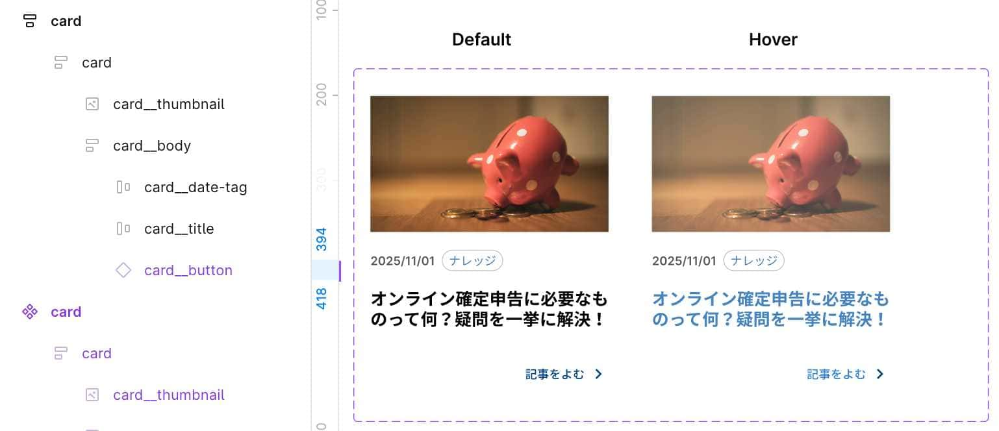
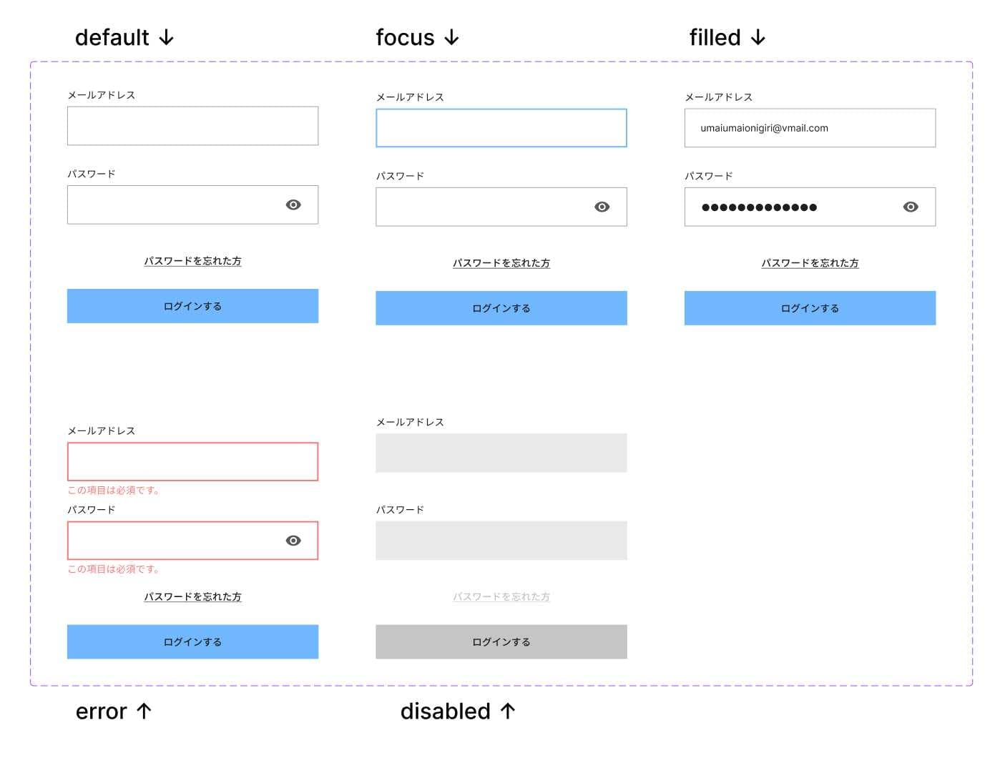

デザインの意図を、
実装につなぐ
マークアップを目指します。
略歴

小柳 佳那子
Kanako Koyanagi
約10年間、公立・私立の小中高で美術教育に携わってきました。
特別支援教育やICT教育に関わる中で、
情報の伝え方やアクセシビリティへの関心が高まりました。
現在は、デザインと実装のあいだにある情報を整理し、
HTML /
CSSを用いて構造として正確に表現することを目指しています。
toB向け業務UIやデザインシステムの整備、
マークアップ・スタイリング、文章による情報整理を通じて、
読みやすく、保守しやすく、一貫性のあるUI設計を目指しています。
今後やりたいこと
-
htmlマークアップとCSSスタイリング
私は全工程の中で、htmlとCSSが一番好きです。理由は、人間とコンピューターが同じ構造・同じ結果を共有できる言語だからです。
デザインで考えた構造が、そのまま実装に反映され、誰が見ても同じUIとして表現されるところに魅力を感じています。 -
得意領域を活かして仕事をしたい
以下の図は、UIデザインにおけるデザインの五段階モデルと呼ばれるものです。
こちらを用いて私の得意領域の可視化を行っています。
図：得意なデザイン領域（UIの5段階モデルに基づく）。
特に「骨格（設計図・ワイヤーフレーム）」、「構造（情報設計）」、「要件（要件定義）」の工程に強みを持っています。 -
「地味な整備屋」「デザインと実装を繋げること」をやりたい
私は環境調整や、仕組み、動線そのものを整え、「誰がやっても同じ結果になる」「タスクに取り組みやすい」環境にすることが好きです。
実務で言うと、再利用や運用を前提としたコンポーネント設計の部分にあたります。
デザインと実装のあいだに生じやすいズレを減らすことを目指して、チーム全体の生産性と一貫性を高めたいです。 -
アクセシビリティを担保したい
Webやアプリケーションに関わる人間としての責務だと思っています。
特に、Webサイトは不特定多数の人々が触れる媒体です。
できる限りユーザーの操作負荷を下げることを目標にしたいです。 -
まとめ
HTMLとCSSを使い、構造が分かりやすく一貫性のある実装を目指しています。
設計や情報整理など中流工程を強みに、デザインと実装のズレを減らしてきました。
地味な整備とアクセシビリティを大切にし、使いやすく保守しやすいWeb制作に関わりたいです。
アクセシビリティへの考え
-
1 自身の原体験として
- 忘れ物をすることで授業に参加できない
- 教師の口頭指示が頭に入らない
- テストやプリントの情報量に圧倒される
- そもそもやるべきことがわからない
と言った、ここには書ききれない「情報がきちんと届かない経験」「それにより生じた不利益」が、
子どもの頃からずっと自身の心や身体に残っています。大人になった今、経験を活かしたり、様々な方法を使ったりすることによって、それを克服出来ていることもあります。
この体験を活かしたい、という気持ちはずっとありました。
では、当事者だからと言って、同時に自分とは違う特性の人々のことを本当に理解出来ているのでしょうか？
車椅子ユーザー、聴覚障害者、視覚障害者など、様々な人々の「アクセスしにくさ」「しんどさ」がどのようなものか、本当に想像出来ていたのでしょうか？なぜ、アクセシビリティを責務だと思っているのか。
その前提として、- 自身がADHD当事者だから
- 弱者を助けてあげたい
どちらも違います。※そもそも「弱者」という言葉を使うのは適切ではないと思っています
自分もしんどかった、でも見えていない、想像の及んでいない人々のしんどさを垣間見てしまったから、
という理由が今現在、言語化できる限界かもしれません。 自分の経験ベースだけを想いにやっていくのは違う気がします。それに、私の知識や想像力には限界があります。
人と関わっていく中で、自分一人だけでは辿り着けない場所があることを知りました。 どんな人も立場ごとに、それぞれ「しんどさ」と「特権」を持っています。その知識と想像力が、私は欲しいのです。 -
2 特別支援と現場の隔たり
いざ大学を卒業し、学校現場へ配置されて初めて分かったことがあります。
2010年当時、特別支援教育と学校現場には隔たりがありました。
支援が必要な生徒は、確実にいます。文科省も特別支援教育を重要なものとして位置付けていました。
それにも関わらず、現場にはあまりそれが浸透しているようには見えませんでした。
むしろ、厄介なものとして存在していました。※当時私の勤務していた学校に限りますその時に、
「何故特別扱いをしなければいけないんですか？」
と言われたことは、未だに自分の中で未消化の問題であり、一生をかけて答えなければならない問いであると今では感じています。
それと同時に思っていたことが、「自分次第で決めたことに対して、生徒側の影響が大きすぎる」でした。
私の裁量で、教室や授業を設計できてしまう権力を持ってしまっている。大袈裟かもしれないけれど、私の裁量で生徒の運命が決まってしまう。 居心地によっては、最悪この世界が嫌いになりかねない、と思いました。
二十代前半にして、いきなりそんな権力を持つことになるのは、まずもって健康的じゃない、というのを自覚すべきだと思っていました。
さらに、自分の中にいる子どもの頃の自分が「いいなあ。自分はこんな支援受けたことない」と事あるごとに言うのです。
自問自答の日々が始まりました。 -
3 返答できなかった後悔を原動力に
制度や文化の壁は分厚く、
みんな平等に同じ扱いをする = 正しく見える公平さ
それが正とされやすい世界でした。「何故特別扱いをしなければいけないんですか？」に対して
返答できなかったことによる後悔は、間違いなく今でも私の原動力になっています。 -
4 Webアクセシビリティとの出会い
それから、美術の授業のために行ったデザインの教材研究の中から、ひとつのワードに辿り着きました。
それがアクセシビリティでした。私にとってそれは、あの時の質問にやっと言葉で返せそうな概念そのものでした。Webアクセシビリティは、
- Aさんは字幕がほしい
- Bさんはキーボード操作がしたい
- Cさんは色ではなくテキストで判断したい
のように、以上のことを網羅した「公正寄りの設計」を、コードとインターフェイスでやるものであると理解しました。 障害も、特性も、状況も誰一人として同じ人はいません（自身はこの世は障害者と健常者に分かれた世界では決してないと考えます）。
アクセシビリティや、特別支援は「特別扱い」ではない。 「誰も排除しない設計」であると考えています。 -
まとめ
学校は物理空間であり、Webは情報空間です。一見関係のない両者には共通点があります。
それは、- 情報への入り口を正しく設計する必要があること
- 誰がその情報を使えるか／使えないかを、設計側が決めてしまえる権力構造が存在すること
この設計を決める側に存在する / していた人間としては、やはりアクセシビリティは責務であると考えます。
Webアクセシビリティを担保したい =
- 情報にアクセスしづらかった自分
- 支援が必要だった生徒たち
- 特別扱いはおかしいとの問いに返答を返せなかった自分
以上の事柄へのカウンターとケアであると私は考えています。 逆に言えば、上記のどれか一つが欠けていたら、果たして自分はアクセシビリティをやりたい、やらなければいけない、と思ったでしょうか。 その世界線の自分を想像すると、時々恐ろしくなります。
私が見えていない、想像できていないことはたくさんあります。 だからこそ、人の声を聞きにいくことと、学び続ける姿勢を大切にしながら仕事を続けていきたいです。 -
おまけ
学校現場でのアクセシビリティの原体験
- 板書は、色で情報を伝えない。白チョークのみを使うようにしていました。
- プリントは、なるべく簡潔に。特に見出しと本文を見やすく。情報は削れるだけ削り、認知負荷を減らすように。
- 忘れ物自体を無くすために、美術の授業で使う道具は全て個人の持ち物ではなく、共同で使うものとして常に美術室に置いていました。筆も絵の具もパレットも全てです。そうすることで、授業に参加できなくなる、道具の貸し借りが発生しない構造にしないように。
- 手順が複雑なものは特に、手順を写真と文章にしたものを全てプリント化して配り、いつでも見られるように。
- どこに何があるか明確に、誰でも棚のラベルを見ればそこから道具を出し入れできます。
当時思っていたこと
- 子ども側に「頑張れ」「ちゃんとして」とか絶対に言わない
- 行動や能力じゃなくて、「環境」「情報」「システム」の仕組み側を変える。
- 誰しも起こりうる「困りがちなこと」を起点にすると、結果的に全員が楽になる設計に寄っていく。
-
おまけその2
最近感銘を受けたアクセシビリティ関連の記事や登壇※2026年1月時点
1 アクセシビリティカンファレンス福岡2025での植木真氏の登壇
ひとこと
トラウマインフォームドデザインは、まさに私の中で一生モノの課題になりそうです。
「あれはそういうことだったのか」という目から鱗の連続でした。権力というのは、誰でも持ち得るものだと思います。
UIもUXも、人に辛い思いを強いるべきではないと私も思います。そして、Burnout対策のみならず、あらゆる事象に応用できる重要な内容であると感じました。
2 チャコウェブさんの記事、GAAD JAPAN 2024 参加レポート②より
Tenさん（合同会社Ledesone）のセッション「見えづらい困りごとを持つ当事者視点を活かしたインクルーシブデザイン」ひとこと
アクセシビリティにおいて、いわゆる「見えづらい障害」に焦点を当ててある登壇をまとめてある記事で、ざっくりわかりやすく網羅されているので、導入にはよいのではないかと思いました。
ただし、発達障害のUIでの困りごとはあまりにも人によって違う部分が多いので、登壇者が語ったとされる「障害名や症状ではなく、具体的な困りごとを起点に考えることが重要」という部分は深く頷けました。やはり困りごとを起点に考えることが重要なのだと思いました。
3 HTMLを直接読み書きせず、スクリーンリーダーも使わずに、アクセシビリティを向上させられないだろうか（と思ってブラウザ拡張を作ってる） より
ymrlさんのZenn記事ひとこと
自分が思っていた「怖い」の言語化の答えがそこにはありました。この怖いがわかる時点で、私自身はマジョリティ層であることもよくわかります。
開発された拡張機能は、自分の制作物はもちろん、世のサイトを見る時にも大変便利でした。これを作っちゃうのが本当に尊敬です…！
4 うおやま著「ヤンキー君と白杖ガール」より
ヤンキー君と白杖ガール 1巻ひとこと
私にとって、アクセシビリティのバイブルとなった作品です。ちょうどWebデザインの学校に通った時に出会いました。
主人公のヤンキーくんは、好きになった弱視の高校生にあの手この手でアプローチをかけるのですが、そのアプローチが素晴らしいのです。
例えば、良かれと思って時には間違ったことをやってしまう（=ヤンキー君の身長が高いのであと10cm身長が高ければあなたの声が聞こえやすいのに、といわれ足元が不安定なハイヒールをプレゼントしたり）のですが、
どうすれば好きな子が幸せに、快適に過ごせるかをとにかく試行錯誤するんです。アクセシビリティのヒントがたくさん詰まった作品です。
やってきたこと
-

過去の自分やお手本と見比べ、技術向上を目指すアプリのUIデザイン
導線設計から全ページのUIデザインを担当
-

釣り人が集まり、釣果を投稿することに特化したSNSアプリデザインと実装
リニューアルするにあたって、主に投稿画面の導線設計・デザイン・実装を担当
-

銀行口座の不正な取引を自動で判断し、不正取引を検知するシステムのUIデザイン
要件定義から関わる。全ページのUIを担当。
できること
-
マークアップ・スタイリング
HTML / CSSによるマークアップおよびスタイリングを行います。
セマンティックな構造設計を土台に、キーボード操作・フォーカス制御・コントラスト・代替テキストなど、アクセシビリティを前提とした実装を心がけています。 静的なHTML / CSSによる実装から、Reactなどのフレームワーク環境におけるマークアップまで対応可能です。 CSSについても、素のCSSを用いた設計から、フレームワークやライブラリを活用したスタイリングまで、 実装環境に応じて適切な手法を選択しています。 -
UI・Webデザイン
アプリのUI設計やWebページのデザインから、 マークアップ・スタイリングまで一貫して対応しています。
Figmaでは、実装時の構造やコンポーネント分割を意識しながらデザインを行い、 デザインと実装の間にズレが生まれない設計を重視しています。 -
要件定義からの伴走
要件定義の段階からプロジェクトに関わり、 クライアントの要望や前提条件を整理しながら、 機能設計・画面設計、プロトタイプの作成を行います。
言葉だけでは共有しづらい内容を、 画面や構造として可視化することで、 認識のズレを防ぎ、開発を進めやすい状態をつくることを大切にしています。
さらに、業務理解のために、現場視察やその業務に携わる方へのユーザーインタビューも行い、 それを行動フローにまとめることも頻繁に行なっていました。 -
情報設計
情報設計では、ユーザーが「考えなくても使える」状態を目指しています。
操作や情報の負荷を下げるため、 情報の整理・優先順位付け・構造化を行い、 FigJam等を用いて、関係者間で共通認識を持てる形に可視化します。 -
UXリサーチ
UXリサーチを通じてユーザーの状況や感情推移、行動を把握し、 課題として整理した上でUX設計へと反映しています。
「何を設計で解決すべきか」を明確にするためのプロセスとして、リサーチを位置づけています。 -
デザイン×実装の橋渡し
JavaScriptを用いたごく基本的なUIインタラクションの実装や、 UIライブラリ（MUIなど）のカスタマイズ経験があります。
フロントエンドエンジニアの専門領域を担うことはありませんが、 実装の仕組みをある程度理解した上で、 デザインと実装の橋渡しを行うことを目標としています。
チーム開発で目指したいこと
-
命名・構造・ルールをできるだけ共有する
開発ブランチ名やコミットメッセージ、IssueやPull Requestの内容、CSS設計など、
ドキュメントを活用し、適切な命名ルールを明確にすることを目指します。 -
制作物は常にチームで扱いやすいものにする
チームの標準ルール（class命名・CSS設計・Figma運用・gitルールなど）を元に制作します。
さらに、修正・変更・運用に強い設計にすることを目指します。
デザイン設計思考
思考の概要
-
デザインは構造を可視化するもの
私にとってデザインとは、構造を誰にでも分かる形にすることです。
Figmaでは、実際のHTML構造を想定してAuto Layoutを組み、 余白やネスト、命名を整理することで、
デザインと実装の間にズレが生まれない設計を心がけています。
こうした設計によって、人とコンピューターが同じ構造を共有できるUIを目指しています。 -
再利用・修正・メンテナンスを前提に
UIやWebサイトは作って終わりではなく、 再利用・修正・メンテナンスされ続けるものだと考えています。
ReactやCSS Modulesなどの実装環境を想定し、 扱いやすい粒度でコンポーネントを設計・分割しています。
Variant名・クラス名・変数名はあらかじめ統一し、 誰が触っても同じ理解で扱える状態をつくることで、
将来的な変更や拡張にも対応しやすいUIを目指しています。 -
実装を前提にしたデザインを行う
一貫性を保つデザインシステム整備を通じて、
「誰が作っても同じ結果になる」仕組みを意識しています。 -
環境整備がチームの効率化の鍵である
小さな整備の積み重ねで、納期と品質を両立することを目標にしています。
figmaでのデザインとコード対応
Case1 ボタン
命名の一貫性
状態による変化の管理やコンポート名の命名に一貫性を持たせることを気をつけています。
-
Figmaでのデザイン

図 : ボタンコンポーネントのバリアント表。State (Default, Hover, Focus, Disabled) と Type (Normal, Active) の組み合わせのデザインを示している -
html/CSS/JavaScript例
注：こちらのJavaScriptのコードについては、デザインと命名をもとに、 実装イメージを確認するためにAIを活用して作成したJavaScriptコード例です。
デザインと実装の対応を意識した設計例として掲載しています。See the Pen Untitled by KanakoShin (@kanakoshin) on CodePen.
コードが読みにくい場合や、表示されない場合はこちら（Githubリポジトリが新しいタブで開きます）を参照してください。
-
React例
注：こちらは、デザインと命名をもとに、 実装イメージを確認するためにAIを活用して作成したReactコード例です。
普段Reactを主軸とした実装を行っているわけではありませんが、 デザインと実装の対応を意識した設計例として掲載しています。See the Pen Button-React by Kanako Koyanagi (@kanakoshin) on CodePen.
Case2 カード
構造の整合性
HTML構造を考慮して、Figmaではレイヤー構造,レイヤー名（class名との一致）を決め、Auto Layoutを使用します。
-
Figmaでのデザイン
 図 : カードコンポーネントのレイヤー構造一覧（Block: card, Element: card__thumbnailなど） -
html/CSS/JavaScript例
See the Pen Untitled by Kanako Koyanagi (@kanakoshin) on CodePen.
コードが読みにくい場合や、表示されない場合はこちら（Githubリポジトリが新しいタブで開きます）を参照してください。
Case3 フォーム
状態管理と再利用性
状態（default / focus / filled / error / disabled）を Variant として設計し、実装する際の状態管理と対応づけます。
-
Figmaでのデザイン
 図 : ログインフォームにおける各インタラクション状態（未入力・入力中・エラー発生時等）のデザインパターン -
html/CSS/JavaScript例
注：こちらのJavaScriptのコードについては、デザインと命名をもとに、 実装イメージを確認するためにAIを活用して作成したJavaScriptコード例です。
デザインと実装の対応を意識した設計例として掲載しています。See the Pen form by Kanako Koyanagi (@kanakoshin) on CodePen.
コードが読みにくい場合や、表示されない場合はこちら（Githubリポジトリが新しいタブで開きます）を参照してください。